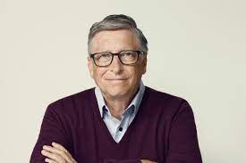
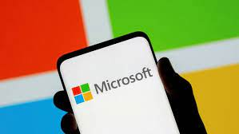

Bill Gates, in full William Henry Gates III, (born October 28, 1955, Seattle, Washington, U.S.), American computer programmer and entrepreneur who cofounded Microsoft Corporation, the world's largest personal-computer software company.
Gates wrote his first software program at the age of 13. In high school he helped form a group of programmers who computerized their school's payroll system and founded Traf-O-Data, a company that sold traffic-counting systems to local governments. During his career at Microsoft, Gates held the positions of chairman, chief executive officer (CEO), president and chief software architect, while also being the largest individual shareholder until May 2014. He was a major entrepreneur of the microcomputer revolution of the 1970s and 1980s.
 Gates is a noted philanthropist and has pledged a significant amount of money to research and charitable causes during the coronavirus pandemic. He has given more than $50 billion to charity since 1994. However, his wealth has grown even faster than he has donated money.